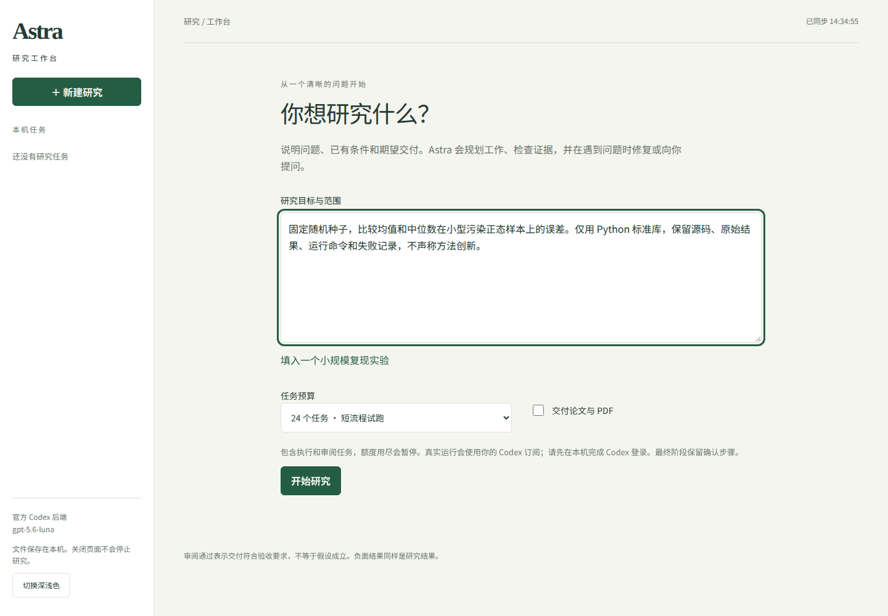

按问题组织研究
说明目标、已有条件和期望交付。从小规模复现或比较实验开始，观察计划与进展，在需要时调整范围。
阅读使用指南 →为好奇心，留出更多空间 v0.1.0-alpha.1 · 实验版
面向个人研究者的开源自动研究框架与本机工作台。提交一个清晰的问题，组织文献、实验与独立审阅，保留代码、数据和结论依据。
Linux 已验证 · 本机运行 · 工作台使用官方 Codex 登录
目标、边界与可证伪的判断标准
查找来源 · 比较假设
执行方案 · 保留结果
保留支持、反驳与尚不确定的结果。
流程完成，不等于假设成立。
负面结果也值得被准确保留。01 — THE WORKBENCH
先限定范围，再开始探索。需要时暂停，检查材料，补充你的判断。

02 — THE APPROACH
从提出问题到检查结果，在同一条研究路径上展开。
建议输入 · 入门问题
固定随机种子，比较均值和中位数在小型污染正态样本上的误差。仅用 Python 标准库，保留源码、原始结果和失败记录，不声称方法创新。
首次选择 24 个任务，先不交付论文。预算可能不足以完成研究，可先检查已产生的材料。
这是可尝试的问题，不是成功案例。已有真实案例的最终交付尚未通过验收。
YOUR NEXT QUESTION
默认安装固定版本 v0.1.0-alpha.1，无需克隆和构建整个仓库。先在独立目录尝试，再决定是否用于你的研究。
准备 Linux、Node.js 22.19 或更高版本、npm 和已登录的官方 Codex CLI。其他系统尚未验证；账号额度与具体兼容版本见使用指南。
完整安装与使用指南 ↗mkdir astra-test
cd astra-test
npm init -y
npm install --ignore-scripts https://github.com/Runder-sun/Astra/releases/download/v0.1.0-alpha.1/earendil-works-pi-astra-0.1.0-alpha.1.tgz
npx --no-install astra-workbench --root ./research --port 4319启动后打开 http://127.0.0.1:4319。开发者请使用源码指南。
PROJECT STATUS
Astra 目前是实验版。软件回归通过不代表研究结论正确，也不代表已经具备完整的自主科研能力。
下载版面向单用户本机使用，不提供公网多人服务或服务重启自动接管保证。任务预算不是实际费用上限。开发源码与下载版分别记录能力和验证范围。
查看版本与支持范围 ↗